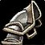

Onslaught Shoulderguards
Onslaught ShoulderguardsOnslaught Shoulderguards1369 armor, 53 stamina, 25 defense rating, 31 parry rating, 17 block ratingSockets red, yellow · Socket bonus 3 dodge ratingTier set piece, Onslaught Armor. Bought with a token, never a raid drop
1369 armor, 53 stamina, 25 defense rating, 31 parry rating, 17 block
rating
Sockets red, yellow · Socket bonus 3 dodge rating
Tier set piece, Onslaught Armor. Bought with a token, never a raid drop
Protection Warrior
StandingUpgrade
Constraints
Special-attack hit cap9%threat
floor
Improved Faerie Fire-3%assumed
Gear needs6%
The Precision talent sits in the Fury tree, which this build does not
reach.
Entry set6.7%clear
by 0.7%
Tier set, Tier 6 shoulder6.7%clear
by 0.7%
The constraint that decides this spec's gear is crit immunity, which it
reaches at 490 defense skill, or 284 defense rating from gear.
That rating figure assumes Anticipation at 5 ranks, which supplies 20
defense skill. Without it the requirement is 332 rating.
Pushing crushing blows off the attack table needs 102.4% of miss, dodge,
parry and block on the character sheet.
White swings stop critting at 69.5%, measured at the special-attack hit
cap.
Nothing rostered reaches it this phase, so crit stays linear all tier.
No haste threshold to protect.
Delta
Onslaught
ShoulderguardsOnslaught
Shoulderguards1369 armor, 53 stamina, 25
defense rating, 31 parry rating, 17 block ratingSockets red, yellow · Socket bonus 3 dodge
ratingTier set piece, Onslaught
Armor. Bought with a token, never a raid drop in Protection Warrior terms EPV 148.53
| Stat | Over Tier 5, Tempest Keep
 Destroyer ShoulderguardsDestroyer Shoulderguards1251 armor, 13 strength, 21 agility, 44 stamina, 29 defense rating, 32 block valueSockets red, blue · Socket bonus 3 block ratingTier set piece, Destroyer Armor. Bought with a token, never a raid drop EPV 168.91 |
Over best Phase 3 off-piece, Hyjal Summit Blood-stained PauldronsBlood-stained Pauldrons1324 armor, 47 strength, 34 stamina, 23 hit rating (1.46%), 32 crit rating (1.45%)Drops from Rage Winterchill, Mount Hyjal EPV 157.66 | Over best pre-phase off-piece, Serpentshrine Cavern Pauldrons of the WardancerPauldrons of the Wardancer1206 armor, 38 strength, 21 stamina, 29 crit rating (1.31%)Sockets red, blue · Socket bonus 3 crit ratingDrops from Hydross the Unstable, Serpentshrine Cavern EPV 132.94 | |||
|---|---|---|---|---|---|---|
| Change | Converted | Change | Converted | Change | Converted | |
| armor | +118 | +45 | +163 | |||
| strength | -13 | -26 attack power | -47 | -94 attack power | -38 | -76 attack power |
| agility | -21 | 0 attack power · -0.64% melee crit | 0 | 0 | ||
| stamina | +9 | +90 health | +19 | +190 health | +32 | +320 health |
| hit | 0 | -23 | -1.46% | 0 | ||
| crit | 0 | -32 | -1.45% | -29 | -1.31% | |
| defense rating | -4 | -1.69 defense skill | +25 | +10.57 defense skill | +25 | +10.57 defense skill |
| parry rating | +31 | +1.31% parry | +31 | +1.31% parry | +31 | +1.31% parry |
| block rating | +17 | +2.16% block | +17 | +2.16% block | +17 | +2.16% block |
| block value | -32 | 0 | 0 | |||
| Stat Highlights (Total Change) | +90 health -1.69 defense skill +1.31% parry +2.16% block | +190 health +10.57 defense skill +1.31% parry +2.16% block | +320 health +10.57 defense skill +1.31% parry +2.16% block | |||
No Tier 6 is ranked for this spec in this slot, so that comparison is
not shown. A weapon the workbook does not rank cannot be compared
against, and a spec with no captured gear set has nothing recorded to
carry in.
Rates
2
attack power per strength·no
melee attack power from agility·33
agility per 1% crit·10
health per stamina, before talents and Blessing of Kings·2.365385
rating per 1 defense skill point·23.653847
rating per 1% parry·7.884615
rating per 1% block·15.77
rating per 1% melee and ranged hit·22.08
rating per 1% melee crit